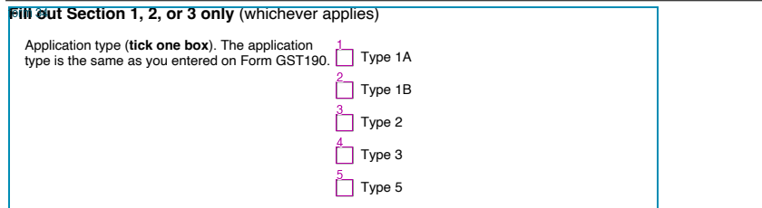
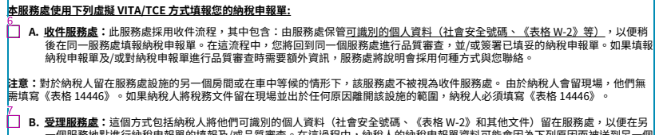

Open experimental report with uncertainty filtering · Detailed findings and reproduction · Accepted baseline
A proposed group must select its prompt and its individual option captions together. Independent assignments remain available. For each selected group, a second complete solve checks whether a different interpretation is nearly as good. Disputed questions and local captions are withheld, with alternatives saved in the report.
RC7190 now assigns Application type to all five application choices, preserves their individual captions, and keeps the three rebate choices in a separate group.

On Chinese page 1, the full A–E group competes closely with B–E under the note. The result is explicitly unresolved. On page 3, the competing consent prompts are likewise withheld while the Yes/No captions remain.

| Case | Finding |
|---|---|
| GST111 #15 and F1120 #28 | Two previously correct local captions are lost. |
| Language-preference form | The correct 21-option configuration exists, but smaller false groups formed from unused caption fragments win. |
| Stronger per-option reward | Restores that language group, but merges RC7190’s two distinct questions. This is a boundary problem, not just insufficient reward. |
AAAA [ ]
[ ] BBBBBoth captions stay correct. No shared group means no shared-style penalty.
Decision: retain conditional prompt/caption selection and complete-assignment comparisons as experimental tools. Improve geometric evidence for question roles and group boundaries before adopting a grouping change. No keyword rules, caption reconstruction, or missing-table recovery were added.
Ten structural checks and scoped validation passed. All 19 pages preserve native values/order and all 503 table exclusions. These results come from the development set.
Raw configuration choices · Scoring control · Every changed prediction and group